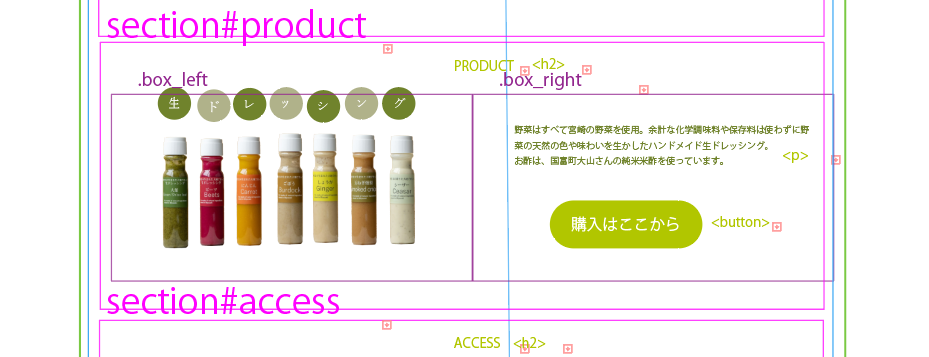

宮崎の野菜の美味しさを知ってもらいたい。
☆ターゲットは国内からの観光客。無農薬野菜の美味しさとやさしさをアピールするサイトを目指しました。
色使いもこだわって、野菜の色から色を抽出してまとめあげました。
Project's Time Line
- 2024.3月上旬
-
インタビュー
Web作成演習の授業で、平和台公園にあるオーガニックレストランSizenのWebサイトのリニューアル(架空)をすることになりました。バディを組み、片方に社長になりきってもらい、リニューアルの目的などについてインタビューしました。インタビューで得た情報から、ターゲット、リニューアルのコンセプト、文言などを考えました。
- 3月中旬
-
独学でWebデザインを学ぶ
(約10時間)
HTML,CSSの知識は学んだものの、Webデザインというものが全く分からない！という問題に直面しました。右往左往しながらYouTubeなどでいくつか参考になるサイトを観て、自分がコーデイングできる、または応用すればできそうなデザインにしよう！と、限定してインプットしました。 - 3月下旬
-
デザインの作成
(約10時間)
figmaもはじめて、illustratorもはじめてだったので、とりあえずwebデザインの参考にした方が使っていたillustratorを使うことにしました。そもそもまず機能・ツールの使い方から調べてチュートリアルを見たり、本当に一からのアウトプットでした。 - 4月上旬
-
コーディング
ワイヤーフレームを作ってコーディングしやすくしてからコーディングしたので、ひと手間かかりましたが、コードの書き方が楽になりました。また、インプットしていた知識の中から、関数を使うこともできたのですごく良いアウトプットになりました。
 - 4月中旬
-
動きをつけて完成！
最終的には、トップページのファーストビューに動画を埋め込み、ページ内にもパララックスなどを使って動きをつけました。